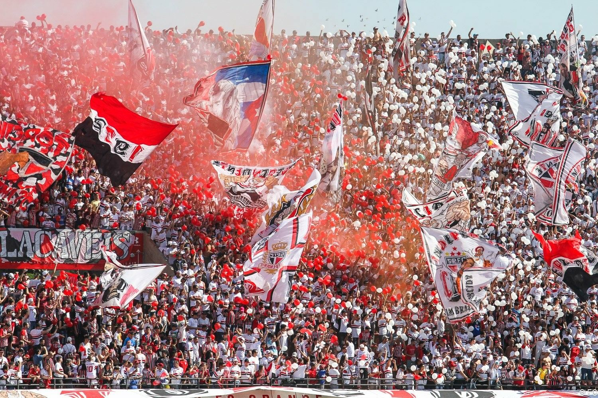

História Sobre o time São Paulo
A história do São Paulo Futebol Clube começou a se desenhar em 1900, quando o Club Athlético Paulistano foi fundado. O Paulistano logo se destacou, tornando-se a grande potência do futebol paulista e brasileiro no início do século XX. O Paulistano se recusava a aderir ao iminente profissionalismo do futebol, e alguns dissidentes juntaram-se à Associação Atlética das Palmeiras, que possuía o melhor estádio da época, mas estava com muitas dívidas, para fundar o São Paulo.[
A trajetória do São Paulo mostra como e por que o clube é o mais vitorioso do futebol brasileiro[2] com a maior quantidade de conquistas nos três principais torneios de futebol disputados por clubes brasileiros, Campeonato Brasileiro (seis títulos), a Copa Libertadores da América (três títulos) e o Campeonato Mundial de Clubes (três títulos).[3]
Leia mais!
O Tricolor Paulista — 1930 a 1934
No dia 27 de janeiro de 1930, às 14 horas, foi assinada a ata de fundação do São Paulo Futebol Clube, no número 28 da Praça da República,[4] nascido da união entre a Associação Atlética das Palmeiras e o Club Athlético Paulistano, ficando como data magna do clube o dia 25 de janeiro de 1930,[5] dia e mês de preferência de seus fundadores por se tratar da data em que foi fundada a cidade de São Paulo.

Leia mais!
Os primeiros anos do clube coincidiram com acontecimentos que marcaram época no futebol brasileiro. Pois foi 1930 o ano da primeira Copa do Mundo, e apenas a partir dele que uma partida passou a ser disputada em dois tempos de 45 minutos. E apenas em 1933 é que o primeiro jogo profissional do país foi disputado, com a equipe d o São Paulo sendo uma das protagonistas juntamente ao Santos